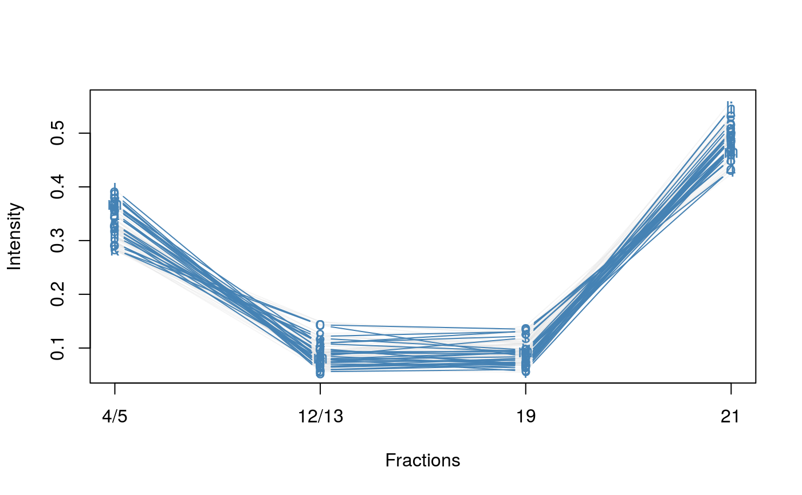
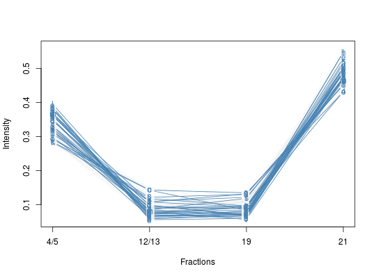

Produces a line plot showing the feature abundances across the fractions.
plotDist(object, markers, mcol = "steelblue", pcol = getUnknowncol(), alpha = 0.3, type = "b", lty = 1, fractions = sampleNames(object), ylab = "Intensity", xlab = "Fractions", ylim, ...)
MSnSet.character, numeric or
logical of appropriate length and or content used to
subset object and define the organelle markers.character define the colour of the marker
features. Default is "steelblue".character define the colour of the
non-markers features. Default is the colour used for features
of unknown localisation, as returned by
getUnknowncol.0 <= alpha <= 1, 0 and 1 being
completely transparent and opaque."p" for points, "l" for lines,
"b" for both. See plot for all possible types.par for details.character defining the phenoData
variable to be used to label the fraction along the x
axis. Default is to use sampleNames(object).plot.Used for its side effect of producing a feature distribution plot. Invisibly returns the data matrix.
library("pRolocdata") data(tan2009r1) j <- which(fData(tan2009r1)$markers == "mitochondrion") i <- which(fData(tan2009r1)$PLSDA == "mitochondrion") plotDist(tan2009r1[i, ],markers = featureNames(tan2009r1)[j])plotDist(tan2009r1[i, ],markers = featureNames(tan2009r1)[j], fractions = "Fractions")